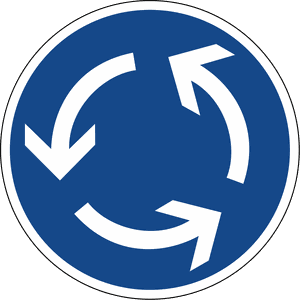

Zeichen 215
Kreisverkehr

12 Tatbestände dazu
141148Sie folgten als Kraftfahrzeugführer nicht der durch Zeichen <215/220> vorgeschriebenen Fahrtrichtung.
25 €
141149
Sie folgten als Radfahrer nicht der durch Zeichen <215/220> vorgeschriebenen Fahrtrichtung.
20 €
141150
Sie folgten als Radfahrer nicht der durch Zeichen <215/220> vorgeschriebenen Fahrtrichtung und behinderten +) dadurch Andere.
25 €
141151
Sie folgten als Radfahrer nicht der durch Zeichen <215/220> vorgeschriebenen Fahrtrichtung und gefährdeten +) dadurch Andere.
30 €
141152
Sie folgten als Radfahrer nicht der durch Zeichen <215/220> vorgeschriebenen Fahrtrichtung. Es kam zum Unfall.
35 €
141153
Sie gefährdeten +) beim berechtigten Überfahren der Mittelinsel im Kreisverkehr (Zeichen 215) einen Anderen.
35 €
141430
Sie hielten verbotswidrig innerhalb des Kreisverkehrs (Zeichen 215) auf der Fahrbahn.
20 €
141431
Sie hielten verbotswidrig innerhalb des Kreisverkehrs (Zeichen 215) auf der Fahrbahn und behinderten +) dadurch Andere.
35 €
141432
Sie parkten verbotswidrig innerhalb des Kreisverkehrs (Zeichen 215) auf der Fahrbahn.
25 €
141433
Sie parkten verbotswidrig innerhalb des Kreisverkehrs (Zeichen 215) auf der Fahrbahn und behinderten +) dadurch Andere.
40 €
141434
Sie parkten verbotswidrig länger als 1 Stunde innerhalb des Kreisverkehrs (Zeichen 215) auf der Fahrbahn.
40 €
141435
Sie parkten verbotswidrig länger als 1 Stunde innerhalb des Kreisverkehrs (Zeichen 215) auf der Fahrbahn und behinderten +) dadurch Andere.
50 €